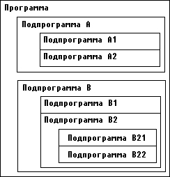

|
|
|
|
Локализация имен
Напомню, что вызов подпрограммы осуществляется простым упоминанием имени процедуры в операторе вызова процедуры или имени функции в выражении. При использовании расширенного синтаксиса Турбо Паскаля (см. ниже) функции можно вызывать точно так же, как и процедуры. Как известно, любое имя в программе должно быть обязательно описано перед тем как оно появится среди исполняемых операторов. Не делается исключения и в отношении подпрограмм: каждую свою процедуру и функцию программисту необходимо описать в разделе описаний.
Описать подпрограмму - это значит указать ее заголовок и тело. В заголовке объявляются имя подпрограммы и формальные параметры, если они есть. Для функции, кроме того, указывается тип возвращаемого ею результата. За заголовком следует тело подпрограммы, которое, подобно программе, состоит из раздела описаний и раздела исполняемых операторов. В разделе описаний подпрограммы могут встретиться описания подпрограмм низшего уровня, в тех - описания других подпрограмм и т.д.

Рис.8.1. Пример структуры программы
Вот какую иерархию описаний получим, например, для программы, структура которой изображена на рис.8.1 (для простоты считается, что все подпрограммы представляют собой процедуры без параметров):
Program ...;
Procedure А;
Procedure A1;
.......
begin
.......
end {A1};
Procedure A2;
.......
begin
end {A2};
begin {A}
.......
end {A};
Procedure В;
Procedure B1;
.......
begin {B};
end
Procedure B2 ;
Procedure B21;
.......
и т.д.
Подпрограмма любого уровня имеет обычно множество имен констант, переменных, типов и вложенных в нее подпрограмм низшего уровня. Считается, что все имена, описанные внутри подпрограммы, локализуются в ней, т.е. они как бы «невидимы» снаружи подпрограммы. Таким образом, со стороны операторов, использующих обращение к подпрограмме, она трактуется как «черный ящик», в котором реализуется тот или иной алгоритм. Все детали этой реализации скрыты от глаз пользователя подпрограммы и потому недоступны ему. Например, в рассмотренном выше примере из основной программы можно обратиться к процедурам А и В, но нельзя вызвать ни одну из вложенных в них процедур А1, А2, В1 и т.д.
Сказанное относится не только к именам подпрограмм, но и вообще к любым именам, объявленным в них - типам, константам, переменным и меткам. Все имена в пределах подпрограммы, в которой они объявлены, должны быть уникальными и не могут совпадать с именем самой подпрограммы.
При входе в подпрограмму низшего уровня становятся доступными не только объявленные в ней имена, но и сохраняется доступ ко всем именам верхнего уровня. Образно говоря, любая подпрограмма как бы окружена полупрозрачными стенками: снаружи подпрограммы мы не видим ее внутренности, но, попав в подпрограмму, можем наблюдать все, что делается снаружи. Так, например, из подпрограммы В21 мы можем вызвать подпрограмму А, использовать имена, объявленные в основной программе, в подпрограммах В и В2, и даже обратиться к ним. Любая подпрограмма может, наконец, вызвать саму себя - такой способ вызова называется рекурсией.
Пусть имеем такое описание:
Program ..;
var V1 : ... ;
Procedure A;
var V2 :...;
.......
end {A};
Procedure B;
var V3 :...;
Procedure Bl;
var V4 :...;
Procedure В11;
var V5;
.......
Из процедуры В11 доступны все пять переменных V1,...,V5, из процедуры В1 доступны переменные V1,..., V4, из центральной программы - только V1.
При взаимодействии подпрограмм одного уровня иерархии вступает в силу основное правило Турбо Паскаля: любая подпрограмма перед ее использованием должна быть описана. Поэтому из подпрограммы В можно вызвать подпрограмму А, но из А вызвать В невозможно (точнее, такая возможность появляется только с использованием опережающего описания, см. п.8.6.) Продолжая образное сравнение, подпрограмму южно уподобить ящику с непрозрачными стенками и дном и полупрозрачной крышей: из подпрограммы можно смотреть только «вверх» и нельзя «вниз», т.е. подпрограмме доступны только те объекты верхнего уровня, которые описаны до описания данной подпрограммы. Эти объекты называются глобальными по отношению к подпрограмме.
В отличие от стандартного Паскаля в Турбо Паскале допускается произвольная последовательность описания констант, переменных, типов, меток и подпрограмм. Например, раздел VAR описания переменных может появляться в пределах раздела описаний одной и той же подпрограммы много раз и перемежаться с объявлениями других объектов и подпрограмм. Для Турбо Паскаля совершенно безразличен порядок следования и количество разделов VAR, CONST, TYPE, LABEL, но при определении о6ласти действия этих описаний следует помнить, что имена, описанные ниже по тексту программы, недоступны из ранее описанных подпрограмм, например:
var V1 : ...;
Procedure S;
var V2 : ...;
end {S};
var V3 :...;
.......
Из процедуры S можно обратиться к переменным V1 и V2, но нельзя использовать V3, так как описание V3 следует в программе за описанием процедуры S.
Имена, локализованные в подпрограмме, могут совпадать с ранее объявленными глобальными именами. В этом случае считается, что локальное имя «закрывает» глобальное и делает его недоступным, например:
var
i : Integer;
Procedure P;
var
i : Integer;
begin
writeln(i)
end {P};
begin
i := 1;
P
end.
Что напечатает эта программа? Все, что угодно: значение внутренней переменной I при входе в процедуру Р не определено, хотя одноименная глобальная переменная имеет значение 1. Локальная переменная «закроет» глобальную и на экран будет выведено произвольное значение, содержащееся в неинициированной внутренней переменной. Если убрать описание
var
i : Integer;
из процедуры Р, то на экран будет выведено значение глобальной переменной I, т.е. 1. Таким образом, одноименные глобальные и локальные переменные - это разные переменные. Любое обращение к таким переменным в теле подпрограммы трактуется как обращение к локальным переменным, т.е. глобальные переменные в этом случае попросту недоступны.
|
|
|
|